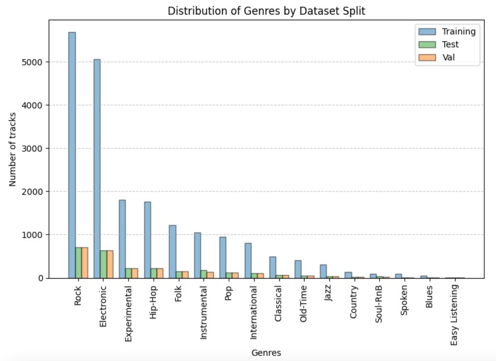
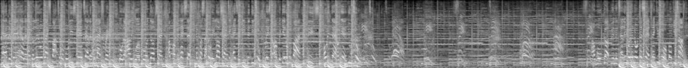
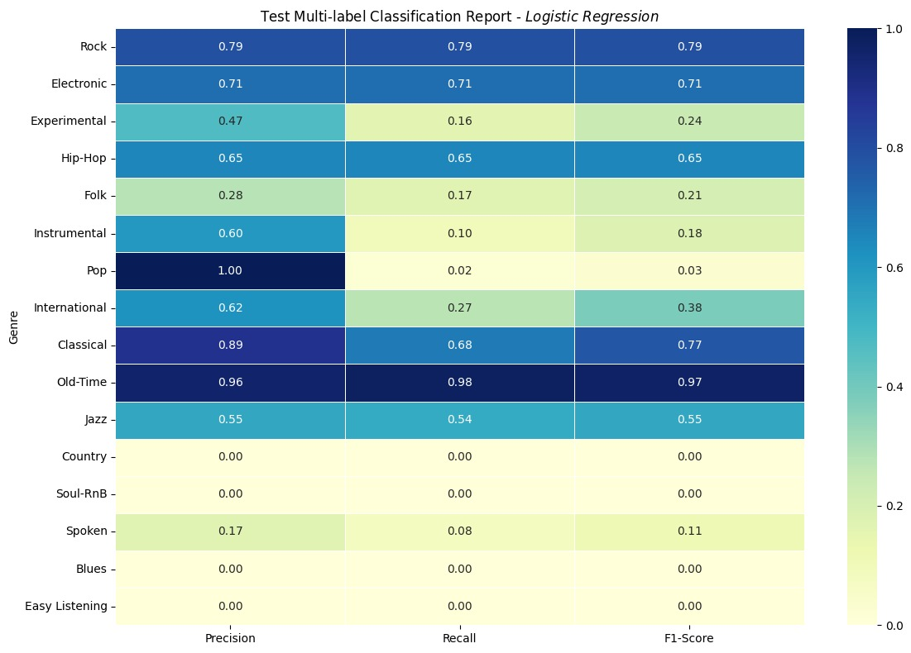
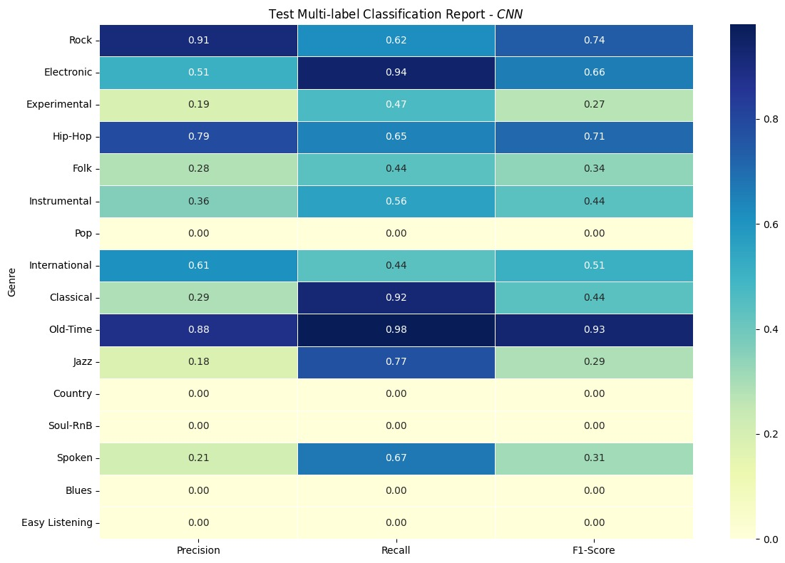
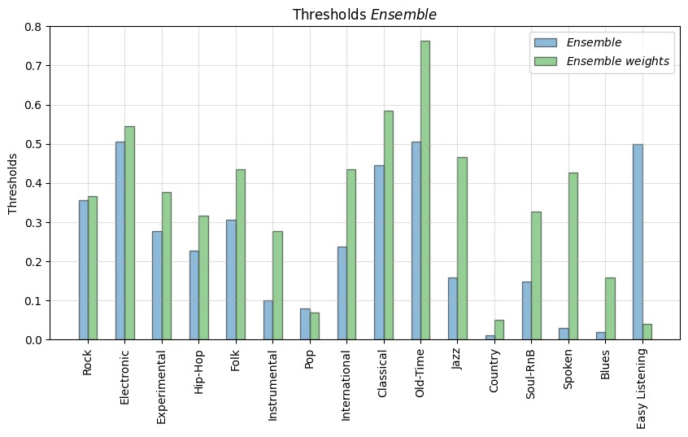
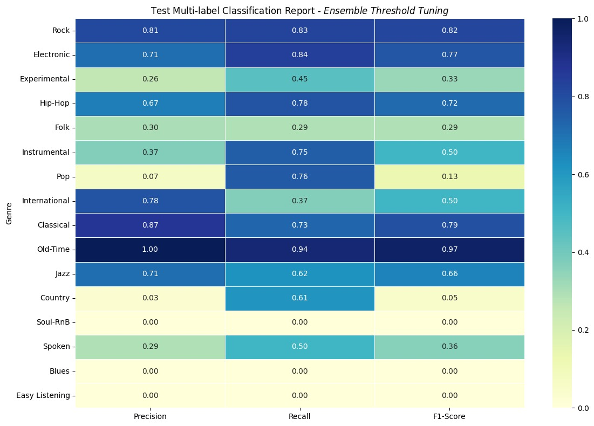

This project was developed as part of the Machine Learning course at the Faculty of Engineering of the University of Porto (FEUP). The objective was to build a machine learning system capable of multi-label music genre classification.
Real-world datasets are often heavily imbalanced, causing models to become "over-confident" in popular genres while entirely ignoring minority ones. Our goal was to move beyond simple, misleading accuracy metrics and engineer a confidence-calibrated model that could fairly characterize tracks across 16 distinct genres.
We utilized the "Medium" subset of the Free Music Archive (FMA) dataset, which provided a solid balance between data volume and computational feasibility.

Figure 1: Genre distribution through the subsets
This dataset consisted of 25,000 30 second .mp4 files, information and numerical analysis of each track. To get the Mel-spectrograms, we used a Python library called librosa to make a Short-Time Fourier Transform on the track.
The result of this procedure was a spectral analysis of the track with 2048 measurements spaning the length of the track over 128 frequency bands. An example of these Mel-spectrograms can be seen in Figure 2.

Figure 2: Example of a Mel-spectrogram used by the CNN model.
Given this is a multi-labeled problem with an imbalanced dataset, a conventional accuracy metric is not the most reliable method to evaluate the performance of our model.
With this is mind, we decided to employ a metric called F1-Score:
$$F1=2\times\frac{Precision\times Recall}{Precision+Recall}$$
We tracked two different F1-Score values during the development of our models:
To tackle the high-dimensional nature of audio data, we engineered a hybrid ensemble architecture that processed both tabular numerical features and visual audio representations (greyscale spectrograms).
We established a baseline using traditional Machine Learning on 518 pre-extracted statistical features. To combat the "Curse of Dimensionality," we applied Principal Component Analysis (PCA), reducing the feature space to 212 components while retaining 95% of the variance. We then trained a Multi-Output Logistic Regression classifier on the normalized data.
Even though this model is very simple, it was able to achieve decent F1-Scores:
From these results, we can see that, since the Micro score is much higher than the Macro, the model is having an easier time predicting some classes over others. This will be improved on with methods discussed bellow.
In Figure 3 we can see a table with the results of the LR model in the testing subset, this allows us to evaluate the performance of the model for each genre.

Figure 3: Table with the results of the Logistic Regression model on the Test subset
From the analysis of this table we can see that the model behaves surprisingly well for many genres, with 5 of them having a Macro F1-Score higher than 50%. We can also see that the less common classes are often ignored my the model or have low scores. This leads us to conclude that it is necessary to employ methods of addressing the class imbalances.
To capture complex temporal audio hierarchies, we converted the raw audio waveforms into visual Mel-spectrograms (greyscale images). We designed a custom Convolutional Neural Network (CNN) with an "inverted pyramid" structure to extract semantic textures. Crucially, we implemented an AdaptiveAvgPool2d layer to enforce Temporal Invariance, forcing the model to detect genre-specific characteristics regardless of when they occur in the 30-second clip.
To address the issue of the imbalanced dataset, we employed Damped Class Weights to the model, which will be discussed in more detail bellow.
The performance of the CNN model can be judged using the table in Figure 4:

Figure 4: Table with the results of the CNN model with damped class weights on the Test subset.
We can see that, even with the Damped Class Weights, this model still struggles with the less common genres. To address this issue, we will apply a threshold tuning and create an ensemble model.
We combined the predictions of both models via weighted averaging. Because the dataset was highly imbalanced, we applied two major optimization strategies:
The thresholds obtained for each class can be seen in Figure 5

Figure 5: Graph showing the value of the optimized thresholds for each class for both the Ensemble model with and without damped class wwights.
Interestingly, we can see that, for most classes, the optimized thresholds for the emsemble model using damped class weights have higher values than the ones for the model without class weights. This shows the positive impact of the damped weights method, since a higher threshold means the model doens't have to correct itself as much in the imbalanced dataset.
The final model was an ensemble of a Logystic Regression and CNN with damped class weights models with optimezed thresholds. The final test results are:

Figure 6: Table with the results of the final Ensemble model on the Test subset.
As we can see from the Macro and Micro F1-Scores, we were able to achieve a better performance on the individual classes. This points to the model being better suited to predict less common genres.
However, it is important to note that this development came at the cost of loss of performance on more more common classes. Therefore, it is important to consider the advantages of applying these methods, since their viability will depend on the final goal.